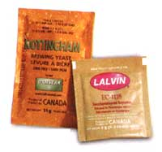

Make your own root beer, ginger ale and grape soda with these easy recipes.
For a delicious and refreshing soda, it's hard to beat one you've brewed yourself. Generations of self-sufficient folks have been making their own beverages from local plants, often from the roots that give "root" beer and "ginger" ale their names. Today's home-brewers use many of the same soda ingredients as the old-fashioned recipes did, and the results are a delicious array of flavors with which artificial soft drinks just can't compete.
Homemade soda is simple and fun to make, and remarkably inexpensive. It's even cheaper to make most homemade soda recipes than it is to buy commercial colas. As an added benefit, many homemade sodas are healthier, too. When soda is made with all natural ingredients, you get all the flavor and healthful properties of the herbs and spices in the recipe, which might include ginger, anise, hops or licorice root. Natural sodas also contain yeast, which is a great source of B-complex vitamins. The most important health benefit of making your own soda, however, is that you can control the amount of sugar. Most commercial colas contain the equivalent of 7 to 9 teaspoons of sugar for a 12ounce soda. When you make your own, you can add sweeteners to taste, and it's easy to brew great-tasting soda with onethird less sugar than commercial brands.
Store-bought soda is made with sugar - usually in the inexpensive form of corn syrup - water and artificial flavorings, and force-carbonated with carbon dioxide:
The gas is pumped directly into the beverage. In homemade soda, the main ingredients also are sugar and water, but in this mixture, the carbon dioxide is produced naturally through fermentation: Once the other soda ingredients have been mixed together, yeast is added to the beverage. Then, it's allowed to sit at room temperature for a day or two so the yeast cells can consume some of the sugar and form carbon dioxide bubbles as a byproduct. To retain this carbon dioxide, the soda must be stored in sturdy bottles.
A similar process is used to brew alcoholic beverages such as beer; the main difference is that soda isn't allowed to ferment for nearly as long. Instead, as soon as soda becomes carbonated, it must be refrigerated to slow the action of the yeast cells and prevent them from consuming all the sugar. Because the fermentation cycle is cut short, one glass of homemade soda usually contains less than 1 percent alcohol. If you started drinking your own soda by the gallon, the sugar would go to your head long before the alcohol would.
To start brewing, you'll need to collect and sanitize a few pls tic bottles, or the single-serving size. Many people prefer to use and reuse glass bottles as an eco-friendly option, but plastic bottles can be a good choice for beginning s soda makers because they're safer. If soda gets' over-carbonated, the bottles could explode, and bursting plastic bottles are less dangerous than shattering glass containers. (Keep reading for more about how to avoid making overly fizzy soda.) If you decide to use glass bottles, make sure you choose those with thick glass and sturdy caps. Swing-top bot tles , are a convenient choice for storing soda. Another good option is to buy glass bottles from a home-brew supply store because you can ask for containers strong enough to hold carbonated beverages.
When using plastic bottles, replace the caps after a few uses because the seals will begin to wear out. Also, never use plastic bottles from your recycling outlet because there's no way to know what the bottles previously held, and plastic can absorb toxic substances.
Sanitizing all your bottles and equipment is important because any bacteria unintentionally introduced to the soda can spoil the taste. An easy way to sanitize your equipment is to soak everything in chlorinated water (1 tablespoon of chlorine bleach to I gallon of water) for at least 20 minutes. Then, wash and rinse thoroughly because any leftover bleach particles can kill the yeast. If you prefer not to use bleach, one alternative sanitizes is Straight-A Cleanser, which does not contain chlorine or phosphates. In addition to bottles, a few must-have root beer supplies include measuring cups and spoons; a large stockpot made of stainless steel or some other non-reactive material; a large spoon for stirring and a funnel with a built-in strainer for bottling the soda .
Although not absolutely necessary, it's also helpful to have a candy thermometer, for measuring the temperature of the water, and bottle labels, for recording the date the soda was brewed. Another handy tool is a bottle brush for cleaning the insides of your bottles. A baby bottle brush will work, or you can buy a beer-bottle brush from a brewing-supply store for about $5.
Most of the herbs and spices for homemade soda are available in natural food stores. For brewing yeast and root beer extract, you'll find the widest selection from home-brew supply stores or by mail order.
Sassafras and Root Beer Extract. The true taste of root beer changed forever in 1960, when the Food and Drug Administration (FDA) banned sassafras from food products because of the suspected carcinogenic properties of safrole, which is present in small amounts in sassafras (as well as in basil, nutmeg and black pepper). Sassafras is the dried bark of the sassafras tree, Sassafras albidum, which is native to North America. Sassafras has been used in folk medicine for centuries, but tests done on laboratory animals found that rats given large doses of safrole developed tumors. As a result, the FDA restricts the sale of sassafras, which makes it difficult to find commercially. It is not included in any of the recipes here.
Today, commercial root beer extract is made with imitation sassafras, which is sassafras root extract with the safrole re moved. Several brands are on the market. Most home-brew shops carry "Rainbow Homebrew," which has a good flavor. Another good extract is Zatarain's, a New Orleans company; this one includes birch and spruce oils. One bottle will make 4 to 5 gallons of root beer.
Yeast. Several different kinds of yeast can be used for brewing, but ale and champagne yeast are the best choices. Both types dissolve well and won't leave the unattractive clumps that bread yeast does, although bread yeast will serve the purpose if it's what you have on hand. Nutritional yeast will not work because the yeast cells are no longer active, and lager yeast is best avoided for the opposite reason: It can over-carbonate your soda.
Sweeteners. Most soda recipes call for sugar, but consider experimenting with different sweeteners. Honey is a delicious alternative to sugar, or use a mix of honey and sugar. Even no-calorie sweeteners, such as the herb stevia, can work, and for those who want to limit sugar intake this approach can be a lower-calorie option. The trick is to use just enough sugar to carbonate the soda and then to make up the difference with the no-calorie product. This method may still require using a substantial amount of sugar: Half sugar and half sugar equivalent is a good starting point.
(If anyone uses stevia for brewing, please write to us at "Country Lore. " We would love to share your recipe with other readers. - MOTHER)
Soda-making is a relatively simple process, so when problems arise they usually fall into two categories: too fizzy or not fizzy enough. For soda that isn't fizzy enough, the easiest strategy is to leave the bottles sitting at room temperature for an additional day or two. As a last-ditch effort to save a batch that shows no signs of fizziness after a few days at room temperature, add an extra pinch of yeast.
Overcarbonated soda is a bigger problem. Keep in mind that homemade soda is almost always more carbonated than store-bought soft drinks. As long as you use plastic bottles instead of glass, overcarbonated soda isn't dangerous, but it can make quite a mess if the bottles burst. Always open soda bottles slowly, and if in doubt, open them outside. If you plan to let your soda carbonate in an especially warm room, consider reducing the amount of yeast in the recipe by half because yeast goes crazy in a warm environment.
Most importantly, always keep bottles of carbonated homemade soda in the refrigerator. Don't leave full, or nearly full bottles of soda in a warm area, and if you do, remove the bottles' caps.
After three or four weeks in the refrigerator, the soda will have lost most of its carbonation, and if you're not planning to finish the bottle, pour it out. However, disposing of home-brewed soda usually isn't a problem - leftovers are rare!
This recipe uses root beer extract, so it’s the one to try if you want the traditional flavor of root beer. You’ll need a 1-gallon plastic bottle for mixing the soda.
1 gallon water
2 cups sugar
2 tablespoons root beer extract
1/4 to 1/2 teaspoon champagne yeast
In a large stockpot, heat the water until warm, about 100 to 110 degrees. Using a funnel, pour the sugar and the extract into a gallon bottle. Next, pour half of the warm water into the same bottle. Then add the yeast to the bottle, attach the bottle cap and shake well. Add the remaining water, then shake again. Pour into 2-liter bottles and attach the bottle caps. Leave 1 to 2 inches of empty space at the top of each bottle. Write the date on the bottles and store them in a warm, draft-free place, ideally at room temperature (68 to 77 degrees) for 2 to 3 days. Then refrigerate the bottles. Makes 1 gallon.
Making this soda from scratch is no more difficult than brewing with extract. It just involves a few extra ingredients. This recipe lacks the familiar flavor of sassafras, usually associated with root beer, but the burdock, licorice and ginger create their own enjoyable taste.
1 gallon water
11/3 cup sugar
1 tablespoon unsulphured molasses
1 cup loosely packed hops flowers
1 piece of ginger, thumb-sized
1 tablespoon ground licorice root
2 tablespoons ground
burdock root
3 or 4 pieces star anise
1/2 teaspoon ale yeast
Combine water, sugar and molasses in a stockpot and bring to a boil. Grate the ginger and add it to the pot along with the hops, licorice root, burdock root and star anise. Keep at a low boil for 45 minutes. Allow to cool, then add the yeast. Let the soda stand at room temperature for 24 hours, then use a funnel and strainer to pour the soda into bottles. Leave 1 to 2 inches of empty space at the top of each bottle and attach the bottle caps. Write the date on the bottles and store them in a warm, draft-free place, ideally at room temperature, for an additional 24 hours. Then refrigerate. For best results, leave the bottles in the refrigerator an additional day or two before drinking. Makes 1 gallon.
Ginger adds a delicious and spicy kick to this soda, and the honey contributes a sweet taste that is richer than refined sugar.
1 gallon water
1 cup honey
2 lemons
1 cup loosely packed hops flowers (optional)
2 pieces of ginger, thumb-sized
1/2 teaspoon ale or champagne yeast
Combine water, honey and hops in a stockpot. Add the juice from the two lemons and bring to a boil. Grate ginger and add to the pot. Simmer for 30 minutes. Allow to cool and then add the yeast. Let the soda stand at room temperature for 24 hours, then use a funnel and strainer to pour the soda into bottles. Leave 1 to 2 inches of
empty space at the top of the bottle and attach the bottle caps. Write the date on the bottles and store them in a warm, draftfree place, ideally at room temperature, for an additional 24 hours. Then refrigerate. For best results, leave the bottles in the refrigerator an additional day or two before drinking. Makes 1 gallon.
Made with real grape juice, this soda is a far cry from the syrupy sweetness of commercial grape sodas. It’s an interesting change of pace for adults, and it’s a fun treat for children, too.
1/2 gallon grape juice
1/2 gallon water
3/4 cup sugar
1/2 teaspoon ale or champagne yeast
Simmer juice, water and sugar in a stockpot for 30 minutes. Let cool, and then add the yeast. Let the soda stand at room temperature for 24 hours, then use a funnel to pour the soda into bottles. Leave 1 to 2 inches of empty space at the top of the bottle and attach the bottle caps. Write the date on the bottles and store them in a warm, draft-free place, ideally at room temperature, for an additional 24 hours. Then refrigerate. For best results, let the soda sit an additional day or two in the refrigerator before drinking. Makes 1 gallon.
|
|
 |
|
|
|
|
|